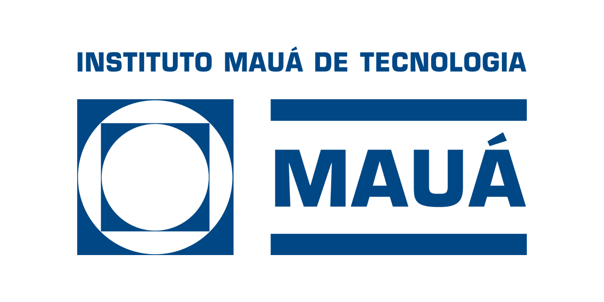

Estrutura
Organização das informações essenciais de cada curso e suas prioridades.
Case study · Front-End · Mobile first
Uma experiência para apresentar dezenas de cursos de pós-graduação do Instituto Mauá de Tecnologia em uma única jornada.
O desafio era apresentar dezenas de opções de pós-graduação sem transformar a página em um catálogo difícil de explorar.
A solução precisava funcionar bem no mobile, organizar as informações por prioridade e ajudar o usuário a comparar possibilidades com menos esforço.
O projeto partiu de uma estrutura pensada para leitura rápida, com foco em clareza, responsividade e manutenção.
Organização das informações essenciais de cada curso e suas prioridades.
Priorização da leitura, navegação e conversão em telas menores.
Aplicação do layout com componentes consistentes e escaláveis.
Implementação front-end com foco em manutenção, desempenho e consistência.

O projeto reforçou meu entendimento de que um bom front-end não é apenas a reprodução de uma tela. É a construção de uma estrutura capaz de sustentar conteúdo, mudanças e diferentes contextos de uso.